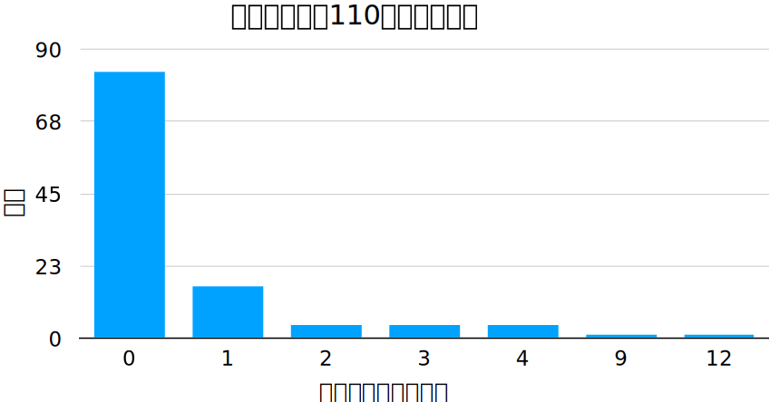
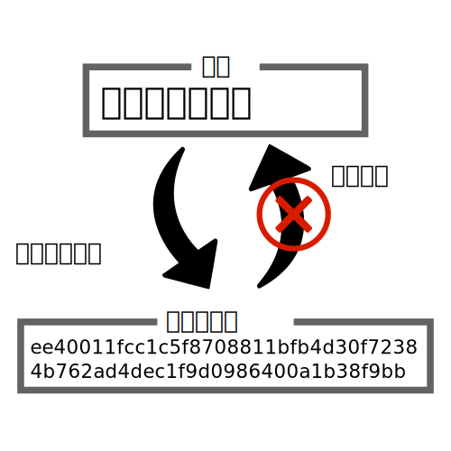

新型コロナウイルスの感染拡大抑止を目指し，皆さんに行動変容のきっかけとしてもらうため，どのように感染症が広がるのかを再現する簡単なシミュレータを作成しました．
(素人が作っていますので，予定外の操作をされるとぶっ壊れます．表示がおかしくなった時はこのページをリロードしてください．)
まず，もっとも簡単なモデルで試してみましょう．この下にあるボードは，我々の住んでいる世界を仮想的に再現したものです．ボード上に均等に配置されたマス目は，われわれそのものです．すなわち，ここには11×11=121人の集団が身を寄せ合っているということです．ちょっと信じがたいほどに抽象化されていて混乱するかもしれませんが，そういうものと割り切ってください．何はともあれまずは下にある ボタンをポチッと．
日数:0
どうですか？私のコードが間違ってさえいなければ，中心にあった赤いマスがどんどん広がって，ついにはボードが赤いマスで覆われたはずです．赤いマスはウイルスへの感染者を表していて，中心の彼が周りの8人に感染させ，またその周りの8人が感染させ...ついには全員が感染してしまったわけです．もう一度見たい時は ボタンでリセットしてください．1日ずつ日付を進めたい時は ボタンを押してください．
うすうす感づいているかと思いますが，現実はこんなに単純ではありません．まずはこんな疑問が生まれるはずです．「感染者は必ず8人に病気をうつすって誰が決めたんだ？」その通り．感染者一人が何人にうつすかはランダムです．加えて，最初に現れる感染者がたった一人とは限りません．これらを組み込んだモデルが，次のものです．
日数:0
感染確率α:%
初期感染確率P(I):%
少し状況が複雑になってきたので，人数を増やしました．ちなみに，このボードの上端と下端，および右端と左端は繋がっています．
再生すると，感染は不規則な形で広がっていきます．ちょっとシミュレーションっぽくなってきました．2つのパラメータをスライドバーでいじれるので，色々試してみてください．以下にパラメータの説明を付記しておきます．
少し現実味を帯びてきましたが，大事な要素がひとつ足りませんね？免疫です．例えばはしかに一度かかって回復したら，ほとんどの場合二度とはしかにかかることはありません．
免疫という概念の導入はとても大切です．なぜか？ちょっと下のモデルを再生してみてください．
日数:0
感染者は緑色の免疫保持者に阻まれて，感染を広げることができません．地域内で多くの人が免疫を持つようになると，このような状況が頻発して感染は収束していきます．これを集団免疫と呼び，感染収束の目安となります．ただし...残酷な話ですが，それだけ多くの人間が感染したら，死亡者も相当な数になってしまうでしょう．だから私たちは，免疫を人工的に作り出せるワクチンを待ち侘びているのです．
以下は，免疫を導入したモデルです．今までよりいくぶんか面白い動きをしてくれるはずです．
日数:0
感染確率α:%
初期感染確率P(I):%
感染性期間1/γ:日
パラメータが一つ増えたので，以下で説明します．
まだまだツッコミどころはありそうなものですが，ひとまずそれっぽくなってきました．ここで，新型コロナウイルスの特性を導入したモデルを作ってみます．
新型コロナウイルスは，実は一つ重要な特性を持っています．それは，80%の人間は誰にも感染させず，20%の人間がほとんど感染させている，という点です．
くどくど説明するより，このグラフを見た方が早いでしょう．これは厚労省の調査で，110人の感染者がどれだけの人数に感染させたのかを調べたものです．83人もの人が誰にもうつしていません．なのになぜこんなにも感染力が強いのか？その答えはグラフの右の方．値が少なすぎてほとんど潰れていますが，多い人で1人あたり12人にもうつしています．こういった存在を専門用語でスーパースプレッダーと言います．さて，なぜスーパースプレッダーは生まれるのでしょう？その答えは昨年耳にタコができるほど聞いたあの言葉「三密」にあるのです！
ここで，三密をおさらいしておきましょう．三密とは，
の総称でした．一躍時の人となった「8割おじさん」こと西浦博先生は，感染の極初期(昨年の2月ごろ)このような三密の条件で過ごした人間がスーパースプレッダーになりやすいという仮説を立てています．先見の明とはこのことか...といったところですが，ともかく三密の回避は感染抑制に重要なファクターとなりそうです．そこで，三密がどの程度回避されたか？を表すパラメータを用意したモデルが以下になります．
日数:0
初期感染確率P(I):%
三密指数m:%
また新しいパラメータが登場しました．代わりに「感染確率」「感染性期間」は調節できなくなっていますが，実はこの2つは感染症の種類によって大体決まっています．新型コロナウイルスの場合も研究である程度はわかっているので，それを採用しました．
パラメータをあれこれ弄れば，その効果は絶大であることがわかります．しかし，「行動制限をかければ同じ効果が得られそうだけど，どうしてそんなに三密にこだわるの？」と思うかもしれません．なぜか．それは，三密の回避というのは非常に「コスパ」の良い対策であるからなのです．確かにロックダウンをすれば感染はストップするでしょう．でも，同時に経済もストップしてしまう．ロックダウンは全く持続的とはいえない対策なのです．三密回避は，いわば新型コロナウイルスの急所を突く作戦というわけです．
たった1年前には想像だにしない世界に来てしまった，と心の底から思います．私たちの社会というものは，新興感染症に対してあまりにも無頓着すぎたと今は感じています．ともあれ，ワクチン開発が成功したという明るいニュースもあちらこちらで聞こえてきています．来年の今頃は，なんのためらいもなく新年を祝えることを願って，「あけましておめでとう！」．
1章で解説したシミュレータを拡張して，人数を100×100=1万人にし，感染状況をグラフ化して見られるようにしました．パラメータを色々触って遊んでみてね．
日数:0
感染確率α:%
初期感染確率P(I):%
感染性期間1/γ:日
おそらく存在は知っていると思います，「接触確認アプリCOCOA」．ダウンロード件数は2000万件を超えましたが，私の身の回りでインストールしている人はまだまだ少ないです．なんとなく怖いという理由で忌避している人もいるかもしれないので，その有用性をここで力説しておきます．
新型コロナウイルスは，潜伏期間が長く発症前から感染させることはご存知かと思います．発症者だけを追いかけても感染はなかなか止まらないので，保健所はクラスター対策と称して接触者の追跡を行っていますが，どうしても限界があり，他人のプライバシーに踏み込むことになるので難しい面があります．
COCOAのすごいところは，一切プライバシーを侵害することなく接触者追跡を行える点です．COCOAはBLEと呼ばれるBluetooth通信の一種を用いて，15分以上近くにいた人のスマホ固有の情報を「ハッシュ」と呼ばれる暗号で保管します．COCOAの肝はここです．
ハッシュ暗号は，暗号化することはできても復元はできないという原理的特徴を持っています．接触から数日後，近くにいた人が感染者として登録されると，その人のスマホの情報をハッシュ化したものが日本中のアプリに配られます．記録したハッシュが一致すれば，感染者と接触したことがわかり，通知が来るという仕組みです．
実際にやり取りされるのはそのハッシュ暗号だけですから，個人を特定することは一切不可能です．安全かつ優秀なCOCOAですが，唯一の欠点はみんながインストールしていないと意味をなさないことです．あなたのスマホに100MB程度でも空きがあるのなら，ぜひインストールしてみてください．

言うまでもなく現代では情報が溢れているので，どこから正しい情報を得たものか難儀していると思われます．そこで，個人的に参考にしている組織や個人を羅列してみます．
感染症疫学では，1900年代に入り感染者のデータが取られるようになってから，数理的にその感染を解析する流れが生まれました．この分野を数理感染症と言い，西浦先生もこの分野の第一人者です．ここではそのごく入門レベルを素人が解釈して記述してみます．少し込み入った話もするので，以下のページに置いておきます．